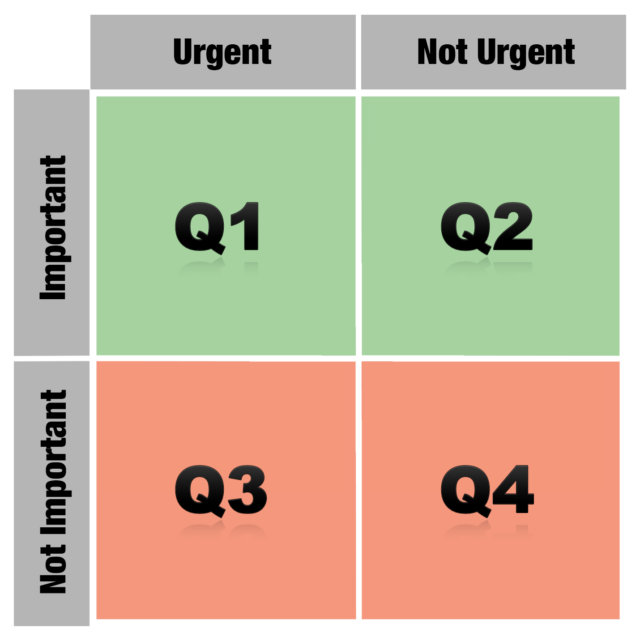

This blog has been migrated to linghao.io. Read this post on my new blog: https://linghao.io/notes/the-effective-engineer/.
Starting from “time is our most limited resource”, The Effective Engineer by Edmond Lau first establishes the methodology of using “leverage” to guide our actions. The book then, from multiple angles, discusses how to become a more effective engineer by focusing on high-leverage activities that produce a disproportionately high impact for a relatively small time investment. Ranging from adopting mindsets, actual execution, to building long-term values, topics involved are complemented with ample examples within the industry. Much content are easily generalizable to areas beyond software engineering as well. A must-read for software engineers.
This post is a refined version of the notes I took while reading this book.
Part I: Adopt the Right Mindsets
1. Focus on High-Leverage Activities
Use leverage to measure your engineering effectiveness
Leverage = Impact Produced / Time Invested
Leverage is critical because time is your most limited resource.
Pareto principle: 80% impact from 20% work – high-leverage activities that produce a disproportionately high impact for a relatively small time investment.
Systematically increase the leverage of your time
Three ways to increase your leverage:
- Reducing time
- Increasing output
- Shifting to higher-leverage activities
Examples:
- Attending meetings
- Defaulting to a half-hour meeting instead of a one-hour meeting
- Prepare an agenda and a set of goals
- Replace the in-person meeting with email discussion if possible
- Developing a customer-facing feature
- Automate parts of the development / testing process
- Prioritize tasks
- Use knowledge about customers to understand whether there’s another feature you could be working on
- Fixing bottlenecks in a web application
- Learn to effectively use a profiling tool
- Measure both performance and visit frequency so you can address the bottlenecks that affect the most traffic first
- Design performant software from the outset so that speed is prioritized as a feature instead of a bug to be fixed
Focus your effort on leverage points
Don’t confuse high-leverage activities with easy wins. Many high-leverage activities require consistent applications of effort over long time periods to achieve high impact.
Find leverage points, establish high-leverage habits.
2. Optimize for Learning
Adopt a growth mindset
- Fixed mindset: humans are born with a predetermined amount of intelligence
- Growth mindset: humans can cultivate and grow their intelligence and skills through effort
Own your story. Instead of apologizing for where your resume doesn’t line up, take control of the parts that are within your sphere of influence.
Invest in your learning rate
Lessons from compound interest:
- Compounding leads to an exponential growth curve
- The earlier compounding starts, the sooner you hit the region of rapid growth and the faster you can reap its benefits
- Even small deltas in the interest rate can make massive differences in the long run
When companies pay you for cushy and unchallenging 9-to-5 jobs, what they are actually doing is paying you to accept a much lower intellectual growth rate.
Treat yourself like a startup. Startups initially prioritize learning over profitability to increase their chances of success.
You would rather invest your financial assets in accounts that pay high interest rates, not low ones. Why would you treat your time – your most limited asset – any differently?
Seek work environments conducive to learning
One of the most powerful leverage points for increasing our learning rate is our choice of work environment – because we spend so much time at work.
Factors to consider:
- Fast growth. When the number of problems to solve exceeds available resources, there are ample opportunities to make a big impact. A lack of growth, on the other hand, leads to stagnation and politics.
- Training.
- Openness.
- Pace.
- People.
- Autonomy. The freedom to choose what to work on and how to do it drives our ability to learn.
Capitalize on opportunities on the job to develop new skills
Borrow the idea of 20% time from Google, but take it in one- or two-hour chunks each day, because you can then make a daily habit out of improving your skills.
Gain experience in adjacent disciplines:
- For product engineers: product management, user research, backend engineering
- For infrastructure engineers: machine learning, database internals, web development
- For growth engineers: data science, marketing, behavioral psychology.
Tips:
- Study code for core abstractions written by the best engineers at your company.
- Write more code.
- Go through any technical, educational material available internally.
- Master the programming language that you use.
- Send your code reviews to the harshest critics.
- Enroll in classes on areas where you want to improve.
- Participate in design discussions of projects you’re interested in.
- Work on a diversity of projects. Interleaving different projects can tech you what problems are common across projects and what might just be artifacts of your current ones.
- Make sure you’re on a team with at least a few senior engineers whom you can learn from.
- Jump fearlessly into code you don’t know. Highly correlated to engineering success.
Always be learning, even when outside of the workplace
Some skills we learn could be cross-functional and help our engineering work. For example, increasing your comfort level in conversing with strangers can help with meeting and interviewing. Other skills might not translate directly into engineering benefits, but the practice of adopting a growth mindset toward them makes us better learners and more willing to stretch beyond our comfort zone.
Continual learning is inextricably linked with increased happiness.
Tips:
- Learn new programming languages and frameworks.
- Invest in skills that are in high demand.
- Read books.
- Join a discussion group.
- Attend talks, conferences, and meetups.
- Build and maintain a strong network of relationships.
- Follow bloggers who teach.
- Write to teach – Feynman’s technique.
- Tinker on side projects. Creativity stems from combining existing and often disparate ideas in new ways.
- Pursue what you love.
3. Prioritize Regularly
Track and review to-dos in a single, easily accessible list
The human brain is optimized for processing and not for storage. The average brain can actively hold on 7 +/- 2 items. Expending effort on remembering things reduces our attention, impairs our decision-making abilities, and even hurts our physical performance.
To-do lists should be 1) a canonical representation of our work and 2) easily accessible.
Instead of accurately computing the leverage of each task (which is incredibly difficult), compile a small number of goals to complete. Pick initial tasks towards these goals, and then make a pairwise comparison between what you’re currently doing and what else is on your to-do list. Continuously shift your top priorities towards the ones with the highest leverage.
Focus on what directly produces value
Activity is not necessarily production. Activities like writing status reports, organizing things, creating organizational systems, recording things multiple times, going to meetings, replying to low-priority communications only have a weak and indirect connection to creating value.
Once you’re producing results, few people will complain about declined meetings, slow email response times, or even non-urgent bugs not being fixed.
Defer and ignore tasks that don’t directly produce value.
Focus on the important and non-urgent

Urgency should not be confused with importance. Put first things first.
Label to-dos from 1 to 4 based on which quadrant the activity fall under.
Oftentimes, the root cause of a Quadrant 1 problem is an underinvestment in a Quadrant 2 activity.
The act of prioritization is itself a Quadrant 2 activity, whose important often gets overlooked because it’s rarely urgent. Prioritize the act of prioritization.
Protect your schedule
Engineers need longer and more contiguous blocks of time to be productive than many other professionals.
Managers traditionally organize their time into one-hour blocks. Makers generally prefer to use time in units of half a day at least.
Tips:
- Schedule necessary meetings back-to-back at the beginning or end of your work day.
- Defer helping others when in the middle of a focused activity.
- Block off hours on your calendar or schedule days like “no meeting Wednesdays”.
Limit the amount of work in progress
Increasing work linearly increases the likelihood of failure exponentially.
Constant context switching hinders deep engagement in any one activity and reduces our overall chance of success.
Fight procrastination with if-then plans
Many people do not have sufficient motivation to summon the activation energy required to start a difficult task.
Planning creates a link between the situation or cue and the behavior that you should follow, which follows automatically without any conscious intent when the cue triggers.
Subconscious followup is important because procrastination primarily stems from a reluctance to expand the initial activation energy on a task. This reluctance leads us to rationalize why it might be better to do something easier or more enjoyable, even if it has lower leverage. When we’re in the moment, the short-term value that we get from procrastinating can often dominate our decision-making process. But when we make if-then plans and decide what to do ahead of time, we’re more likely to consider the long-term benefits associated with a task.
If-then planning also can help fill the small gaps in our schedule.
Make prioritization a habit
Take general principles and iteratively adapt your own prioritization system.
The actual mechanics of how your review your priorities matter less than adopting the habit of doing it.
Part II: Execute, Execute, Execute
4. Invest in Iteration Speed
Move fast to learn fast
Investing in iteration speed is a high-leverage decision. The faster you can iterate, the more you can learn about what works and what doesn’t work.
You can build more things and try out more ideas. Not every change will produce positive value and growth. But with each iteration, you get a better sense of which changes will point you in the right direction, making your future efforts much more effective.
Invest in time-saving tools
Almost all successful people write a lot of tools.
- Faster tools get used more often, therefore saving even more time.
- Faster tools can enable new development workflows that previously weren’t possible.
Examples:
- Continuous integration / deployment
- Incremental compilation
- Interactive programming, REPL
- Hot code reloads
Sometimes, the time-saving tool that you built might be objectively superior to the existing one, but the switching costs discourage other engineers from actually changing their workflow and learning your tools. It’s worth investing the additional effort to lower the switching cost and to find a smoother way to integrate the tool into existing workflows.
One side benefit of proving to people that your tool saves times is that it also earns you leeway with your manager and your peers to explore more ideas in the future.
Shorten your debugging and validation loops
As engineers, we can shortcut around normal system behaviors and user interactions when we’re testing your products, extending the concept of a minimal reproducible test case.
When you’re fully engaged with a bug you’re testing or a new feature you’re building, the last thing you want to do is to add more work. When you’re already using a workflow that works, albeit with a few extra steps, it’s easy to get complacent and not expend the mental cycles on devising a shorter one. Don’t fall into this trap!
Effective engineers have an obsessive ability to create tight feedback loops for what they’re testing.
Master your programming environment
Given how much time we spend in our programming environments, the more efficient we can become, the more effective we will be as engineers.
Mastery is a process, not a event. As you get more comfortable, the time savings will start to build.
Tips:
- Get proficient with your favorite text editor or IDE.
- Learn at least one productive, high-level programming language. Each minute spent writing boilerplate code for a less productive language is a minute not spent tackling the meatier aspects of a problem.
- Get familiar with UNIX (or Windows) shell commands.
- Prefer the keyboard over the mouse.
- Automate your manual workflows.
- Test out ideas on an interactive interpreter.
- Make it fast and easy to run just the unit tests associated with your current changes.
Don’t ignore non-engineering bottlenecks
One common type of bottleneck is dependency on other people. Oftentimes the cause is misalignment of priorities rather than negative intentions. The sooner you acknowledge that you need to personally address this bottleneck, the more likely you’ll be able to either adapt your goals or establish consensus on the functionality’s priority.
Project fail from under-communicating, not over-communicating.
- Ask for updates and commitments from team members at meetings or daily stand-ups.
- Periodically check in with that product manager to make sure what you need hasn’t gotten dropped.
- Follow up with written communication on key action items and dates that were decided in-person.
Even if resource constraints preclude the dependency that you want from being delivered any sooner, clarifying priorities and expectations enables you to plan ahead and work through alternatives.
Another common type of bottleneck is obtaining approval from a key decision maker. This kind of bottlenecks generally fall outside of an engineer’s control. Prioritize building prototypes, collecting early data, conducting user studies and so on to get preliminary project approval. Don’t defer approvals until the end.
A third type of bottleneck is the review processes that accompany any project launch. Expend slightly more effort in coordination and communication.
Premature optimization is the root of all evil. Find out the biggest bottlenecks and optimize them.
5. Measure What You Want to Improve
Use metrics to drive progress
If you can’t measure it, you can’t improve it.
Good metrics accomplish a number of goals:
- They help you focus on the right things.
- When visualized over time, they help guard against future regressions. Engineers know the value of writing a regression test while fixing bugs: it confirms that a patch actually fixes a bug and detects if the bug re-surfaces in the future. Good metrics play a similar role, but on a system-wide scale.
- They can drive forward progress. Performance ratcheting: Any new change that would push latency or other key indicators past the ratchet can’t get deployed until it’s optimized, or until some other feature is improved by a counterbalancing amount.
- They let you measure your effectiveness over time and compare the leverage of what you’re doing against other activities you could be doing instead.
Pick the right metric to incentivize the behavior you want
- Hours worked per week vs. productivity per week. The marginal productivity of each additional work hour drops precipitously. Attempting to increase output by increasing hours worked per week is not sustainable.
- Click-through rates vs. long click-through rates. Google measure “long clicks”.
- Average response times vs. 95th or 99th percentile response times. The average is the right metric to use if your goal is to reduce server costs by cutting down aggregate computation time. While the slowest responses tend to reflect the experiences of your power users.
- Bugs fixed vs. bugs outstanding. Tracking the number of outstanding bugs can de-incentivize developers being less rigorous about testing when building new features.
- Registered users vs. weekly growth rate of registered users.
- Weekly active users vs. weekly active rate by age of cohort. The number of weekly active users doesn’t provide a complete picture. That number might increase temporarily even if product changes are actually reducing engagement over time. User could be signing up as a result of prior momentum.
What you don’t measure is important as well.
Choose metrics that 1) maximize impact, 2) are actionable, and 3) are responsive yet robust.
- Maximize impact. Align employees along a single, core metric – economic denominator. Having a single, unifying metric enables you to compare the output of disparate projects and helps your team decide how to handle externalities.
- Actionable. Movements can be causally explained by the team’s efforts. In contrast, vanity metrics like page views per month, total registered users, or total paying customers don’t necessarily reflect the actual quality of the team’s work.
- Responsive. Updates quickly enough to give feedback about whether a given change was positive or negative. It is a leading indicator of how your team is currently doing.
- Robust. External factors outside of the team’s control don’t lead to significant noise. Responsiveness needs to be balanced with robustness.
Instrument everything in your system
When it comes to diagnosing problems, instrumentation is critical.
Adopting a mindset of instrumentation means ensuring we have a set of dashboards that surface key health metrics and that enable us to drill down to the relevant data. However, many of the questions we want to answer tend to be exploratory, since we often don’t know everything that we want to measure ahead of time. Therefore, we need to build flexible tools and abstractions that make it easy to track additional metrics.
Internalizing useful numbers
The knowledge of useful numbers provides a valuable shortcut for knowing where to invest effort to maximize gains.
Internalizing useful numbers can also help you spot anomalies in data measurements.
Knowledge of useful numbers can clarify both the areas and scope for improvement.
To obtain performance-related numbers, you can:
- Write small benchmarks.
- Talk with teams (possibly at other companies) that have worked in similar focus areas.
- Digging through your own historical data.
- Measuring parts of the data yourself.
Be skeptical about data integrity
The right metric can slice through office politics, philosophical biases, and product arguments, quickly resolving discussions. Unfortunately, the wrong metric can do the same thing – with disastrous results.
All data can be abused. People interpret data the way they want to interpret it.
Untrustworthy data that gets incorporated into decision-making processes provides negative leverage. It may lead teams to make the wrong decision or waste cognitive cycles second-guessing themselves.
Our best defense against data abuse is skepticism.
- Compare the numbers with your intuition to see if they align.
- Try to arrive at the same data from a different direction and see if the metrics still make sense.
- If a metric implies some other property, try to measure the other property to make sure the conclusions are consistent.
Metrics-related code tends to be less robust. Errors can get introduced anywhere in the data collection or processing pipeline:
- Forget to measure a particular code path if there are multiple entry points.
- Data can get dropped when sent over the network, leading to inaccurate ground truth data.
- When data from multiple sources get merged, not paying attention to how different teams interpreted the definitions, units, or standards for what ought to have been logged can introduce inconsistencies.
- Data visualization is hard to unit test.
Tips:
- Log data liberally, in case it turns out to be useful later on.
- Build tools to iterate on data accuracy sooner.
- Write end-to-end integration tests to validate your entire analytics pipeline.
- Examine collected data sooner.
- Cross-validate data accuracy by computing the same metric in multiple ways.
- When a number does look off, dig into it early.
6. Validate Your Ideas Early and Often
Find low-effort ways to validate your work
Invest a small amount of work to gather data to validate your project assumptions and goals.
- Demystifying the riskiest areas first lets you proactively update your plan and avoid nasty surprises that might invalidate your efforts later.
- One way to validate your idea would be to spend 10% of your effort building a small, informative prototype.
- Measuring performance on a representative workload
- Comparing the code footprint of the module you rewrote against the original module.
- Assessing the ease of adding new features.
- Minimum viable product (MVP), the version of a new product which allows a team to collect the maximum amount of validated learning about customers with the least effort. Sometimes, building an MVP requires being creative. Dropbox’s MVP was a 4-minute video.
- The strategy of faking the full implementation of an idea to validate whether it will work is extremely powerful. Asana used a fake signup via Google button.
Continuously validate product changes with A/B testing
Even if you were absolutely convinced that a certain change would improve metrics, an A/B test tells you how much better that variation actually is.
A/B tests also encourage an iterative approach to product development.
Beware the one-person team
Additional risks introduced by working on a one-person project:
- It adds friction to getting feedback. And it can be tempting to defer getting feedback until you think it’s nearly perfect.
- The lows of a project are more demoralizing.
- The highs are less motivating.
Tips for setting up feedback channels to increase chances of success:
- Be open and receptive to feedback. Don’t adopt a defensive mindset. View feedback and criticism as opportunities for improvement.
- Commit code early and often.
- Request code reviews from thorough critics.
- Ask to bounce ideas off your teammates. Explaining an idea to others is one of the best ways of learning it yourself. And your explanation might reveal holes in your own understanding.
- Design the interface or API first.
- Send out a design document before devoting your energy to your code
- Structure ongoing projects so that there is some shared context with your teammates.
- Solicit buy-ins for controversial features before investing too much time.
Build feedback loops for your decisions
Creating a feedback loop is necessary for all aspects of a job. Many of our work decisions are testable hypotheses. You may not be able to test an idea as rigorously as you could with an A/B test and ample amounts of traffic, but you can still transform what otherwise would be guesswork into informed decision-making.
7. Improve Your Project Estimation Skills
Use accurate estimates to drive project planning
Managers and business leaders specify targets. Engineers create estimates. A good estimate does not merely reflect our best guess about how long or how much work a project will take. Instead, it’s an estimate that provides a clear enough view of the project reality to allow the project leadership to make good decisions about how to control the project to hit its targets.
Project schedules often slip because we allow the target to alter the estimate. A more productive approach is to use the estimates to inform project planning. If it’s not possible to deliver all features by the target date, we could hold the date constant and deliver what is possible, or hold the feature set constant and push back the date.
Tips for producing accurate estimates:
- Decompose the project into granular tasks. A long estimate is a hiding place for nasty surprises. Treat it as a warning that you haven’t thought through the task thoroughly enough to understand what’s involved.
- Estimate based on how long tasks will take, not on how long you or someone else wants them to take. Managers challenge estimates. If you’ve made your estimates granular, you can defend them more easily.
- Think of estimates as probability distributions, not best-case scenarios.
- Let the person doing the actual task make the estimate.
- Beware of anchoring bias. Avoid committing to an intial number before actually outlining the tasks involved.
- Use multiple approaches to estimate the same task.
- Decompose the project into granular tasks, estimate each individual task, and create a bottom-up estimate
- Gather historical data on how long it took to build something similar
- Count the number of subsystems you have to build and estimate the average time required for each one
- Beware the mythical man-month.
- Validate estimates against historical data. If you know that historically, you’ve tended to underestimate by 20%, then you’ll know that it’s worthwhile to scale up your overall estimate by 25%.
- Use timeboxing to constrain tasks that can grow in scope.
- Allow others to challenge estimates.
Allow buffer room for the unknown in the schedule
Acknowledge that the longer a project is, the more likely that an unexpected problem will arise.
- Leave buffer room for unknowns
- Separate estimated work time from calendar time.
- An 8-hour workday doesn’t actually provide 8 hours of working time on a project.
- The effect of interruptions is further compounded when schedules slip.
- Be clear that a certain schedule is contingent on some person spending a certain amount of time each week on the project.
- Factor in competing time investments.
Define specific project goals and measurable milestones
What frequently causes a project to slip is a fuzzy understanding of what constitutes success.
Setting a project goal produces two concrete benefits:
- A well-defined goal provides an important filter for separating the must-haves from the nice-to-haves in the task list.
- It builds clarity and alignment across key stakeholders. It’s very important to understand what the goal is, what your constraints are, and to call out the assumptions that you’re making.
Building alignment also helps team members be more accountable for local tradeoffs that might hurt global goals.
Define specific goals to reduce risk and efficiently allocate time, and outline milestones to track progress.
Reduce risk early
As engineers, we like to build things. This tendency can bias us toward making visible progress on the easier parts of a project that we understand well. We then convince ourselves that we’re right on track, because the cost of riskier areas hasn’t yet materialized.
Effectively executing on a project means minimizing the risk that a deadline might slip and surfacing unexpected issues as early as possible.
Tackling the riskiest areas first helps us identify any estimation errors associated with them. The goal from the beginning should be to maximize learning and minimize risk, so that we can adjust our project plan if necessary.
Examples:
- When switching to a new technology, build a small-scale end-to-end prototype.
- When adopting a new backend infrastructure, gain an early systematic understanding of its performance and failure characteristics.
- When considering a new design to improve application performance, benchmark core pieces of code.
One effective strategy to reduce integration risk is to build end-to-end scaffolding and do system testing earlier. Front-loading the integration work provides a number of benefits:
- It forces you to think more about the necessary glue between different pieces and how they interact, which can help refine the integration estimates and reduce project risk.
- If something breaks the end-to-end system during development, you can identify and fix it along the way, while dealing with much less code complexity, rather than scrambling to tackle it at the end.
- It amortizes the cost of integration throughout the development process, which helps build a stronger awareness of how much integration work is actually left.
Our initial project estimates will exhibit high variance because we’re operating under uncertainty and imperfect information. As we gain more information and revise our estimates, the variance narrows. By shifting the work that can take highly variable amounts of time to earlier in the process, we reduce risk and give ourselves more time and information to make effective project plans.
Approach rewrite projects with extreme caution
Trying to rewrite stuff from scratch – that’s the cardinal sin.
Rewrite projects are particularly troublesome because:
- They share the same project planning and estimation difficulties.
- We tend to underestimate them more drastically due to a false sense of familiarity.
- It’s easy and tempting to bundle additional improvements into a rewrite.
- When a rewrite is ongoing, any new features or improvements must either be added to the rewritten version or they must be duplicated.
The second system is the most dangerous system a man ever designs.
Engineers should use a series of incremental, behavior-preserving transformations to refactor code. Rewriting a system incrementally is a high-leverage activity. It provides additional flexibility at each step to shift to other work that might be higher-leverage.
Sometimes, doing an incremental rewrite might not be possible. The next best approach is to break the rewrite down into separate, targeted phases.
Know the limits of overtime
Don’t sprint in the middle of a marathon.
Reasons why working more hours doesn’t necessarily mean hitting the launch date:
- Hourly productivity decreases with additional hours worked.
- You’re probably more behind schedule than you think.
- Additional hours can burn out team members.
- Working extra hours can hurt team dynamics.
- Communication overhead increases as the deadline looms.
- The sprint toward the deadline incentivizes technical debts.
Tips for increasing the probability that overtime will actually accomplish your goals:
- Making sure everyone understands the primary causes for why the timeline has slipped thus far.
- Developing a realistic and revised version of the project plan and timeline.
- Being ready to abandon the sprint if you slip even further from the revised timeline.
Part III: Build Long-Term Value
8. Balance Quality with Pragmatism
Establish a culture of reviewing code
The benefits of code reviews:
- Catching bugs or design shortcomings early.
- Increasing accountability for code changes.
- Positive modeling of how to write good code.
- Sharing working knowledge of the codebase.
- Increasing long-term agility.
Fundamentally, there’s a tradeoff between the additional quality that code reviews can provide and the short-term productivity win from spending that time to add value in other ways.
Code reviews can be structured in different ways to reduce their overhead while still maintaining their benefits. Experiment to find the right balance of code reviews that work for you and your team.
Manage complexity through abstraction
How the right abstraction increases engineering productivity:
- It reduces the complexity of the original problem into easier-to-understand primitives.
- It reduces future application maintenance and makes it easier to apply future improvements.
- It solves the hard problems once and enables the solution to be used multiple times.
When we’re looking for the right tool for the job and we find it easier to build something from scratch rather than incorporate an existing abstraction intended for our use case, that’s a signal that the abstraction might be ill-designed.
Bad abstractions aren’t just wasted effort; they’re also liabilities that slow down future development.
Good abstractions should be:
- Easy to learn
- Easy to use even without documentation
- Hard to misuse
- Sufficiently powerful to satisfy requirements
- Easy to extend
- Appropriate to the audience
Scale code quality with automated testing
Tests allow engineers to make changes, especially large refactorings ,with significantly higher confidence. When code does break, automated tests help to efficiently identify who’s accountable.
Tests offer executable documentation of what cases the original author considered and how to invoke the code.
The extent to which you should automate testing again boils down to a matter of tradeoffs. The inflection point came when a simple unit test visibly started to save time.
Manage technical debt
Since our initial understanding of problems always will be incomplete, incurring a little debt is unavoidable. The key to being a more effective engineer is to incur technical debt when it’s necessary to get things done for a deadline, but to pay off that debt periodically.
9. Minimize Operational Burden
Do the simple thing first
Simple solutions impose a lower operational burden because they’re easier to understand, maintain and modify.
Having too complex of an architecture imposes a maintenance cost in a few ways:
- Engineering expertise gets splintered across multiple systems. Every system has its own unique sets of properties and failure modes that must be discovered, understood, and mastered.
- Increased complexity introduces more potential single points of failure.
- New engineers face a steeper learning curve when learning and understanding the new systems.
- Effort towards improving abstractions, libraries, and tools get diluted across the different systems.
People often say, “Use the right tool for the job” – but that can also increase the number of moving parts. Does the complexity of having more parts outweigh the benefits of simplicity through standardization?
Fail fast to pinpoint the source of errors
By failing fast, we can more quickly and effectively surface and address issues.
Examples:
- Crashing at startup time when encountering configuration errors.
- Validating software inputs, particularly if they won’t be consumed until much later.
- Bubbling up an error from an external service that you don’t know how to handle, rather than swallowing it.
- Throwing an exception as soon as possible when certain modifications to a data structure, like a collection, would render dependent data structures, like an iterator, unusable.
- Throwing an exception if key data structures have been corrupted rather than propagating that corruption further within the system.
- Asserting that key invariants hold before of after complex logic flows and attaching sufficiently descriptive failure messages.
- Alerting engineers about any invalid or inconsistent program state as early as possible.
You can take a hybrid approach: use fail-fast techniques to surface issues immediately and as close to the actual source of error as possible; and complement them with a global exception handler that reports the error to engineers while failing gracefully to the end user.
Relentlessly automate mechanical tasks
Engineers automate less frequently than they should, for a few reasons:
- They don’t have the time right now.
- They suffer from the tragedy of the commons, in which individuals act rationally according to their own self-interest but contrary to the group’s best long-term interests. When manual work is spread across multiple engineers and teams, it reduces the incentive of any individual engineer to spend the time to automate.
- They lack familiarity with automation tools.
- They underestimate the future frequency of the task.
- They don’t internalize the time savings over a long time horizon.
Automation can produce diminishing returns as you move from automating mechanics to automating decision-making.
Aim for idempotence and reentrancy
Idempotence offers another benefit that many effective engineers take advantage of: the ability to run infrequent processes at a more frequent rate than strictly necessary, to expose problems sooner.
Running batch processes more frequently also allows you to handle assorted glitches transparently. A system check that runs every 5 to 10 minutes might raise spurious alarms because a temporary network glitch causes it to fail, but running the check every 60 seconds and only raising an alarm on consecutive failures dramatically decreases the chances of false positives. Many temporary failures might resolve themselves with in a minute, reducing the need for manual intervention.
Hone your ability to respond and recover quickly
The best defense against major unexpected failures is to fail often.
It’s important to focus on uptime and quality, but as we go down the list of probable failure modes or known bugs, we will find that our time investments produce diminishing returns. No matter how careful we are, unexpected failures will always occur. At some point, it becomes higher leverage to focus our time and energy on our ability to recover quickly than on preventing failures in the first place.
We can script for success and shift our decision-making away from high-stakes and high-pressure situations and into more controlled environments.
10. Invest in Your Team’s Growth
Help the people around you succeed
The higher you climb up the engineering ladder, the more your effectiveness will be measured not by your individual contributions but by your impact on the people around you. Thinking early in your career about how to help your coworkers succeed instills the right habits that in turn will lead to your own success.
Your career success depends largely on your company and team’s success. You get more credit than you deserve for being part of a successful company, and less credit than you deserve for being part of an unsuccessful company.
Make hiring a priority
A good interview process achieves two goals:
- It screens for the type of people likely to do well on the team
- It gets candidates excited about the team
Tips for improving your interview process:
- Take time with your team to identify which qualities in a potential teammate you care about the most.
- Periodically meet to discuss how effective the current recruiting and interview process are at finding new hires who succeed on the team.
- Design interview problems with multiple layers of difficulty that you can tailor to the candidate’s ability.
- Control the interview pace to maintain a high signal-to-noise ratio.
- Scan for red flags by rapidly firing short-answer questions.
- Periodically shadow or pair with another team member during interviews.
Invest in onboarding and mentoring
A good initial experience influences an engineer’s perception of the engineering culture, shapes her ability to deliver future impact, and directs her learning and activities according to team priorities.
Quora’s onboarding program:
- Codelabs: why a core abstraction was designed and how it’s used.
- Onboarding talks: codebase, site architecture, development tools, engineering expectations and values, key focus areas.
- Mentorship.
- Starter tasks.
Share ownership of code
There’s a common misconception that being the sole engineer responsible for a project increases your value. When you’re the bottleneck for a project, you lose your flexibility to work on other things.
Tips for increase shared ownership:
- Avoid one-person teams.
- Review each other’s code and software designs.
- Rotate different types of tasks and responsibilities across the team.
- Keep code readable and code quality high.
- Present tech talks on software decisions and architecture.
- Document your software, either through high-level design documents or in code-level comments.
- Document the complex workflows or non-obvious workarounds necessary for you to get things done.
- Invest time in teaching and mentor other team members.
Build collective wisdom through post-mortems
Meet and conduct a detailed post-mortem after a site outage, a high-priority bug, or some other infrastructure issue. Try doing the same healthy retrospection to projects and launches.
Ultimately, compiling team lessons is predicated upon honest conversation – and holding an honest conversation about a project can be uncomfortable. It requires aligning behind a common goal of improving the product or team, and not focusing on where to assign blame. It requires being open and receptive to feedback, with the goal of building collective wisdom around what went wrong and what could’ve been done better.
Build a great engineering culture
Great engineering cultures:
- Optimize for iteration speed.
- Push relentlessly towards automation.
- Build the right software abstractions.
- Focus on high code quality by using code reviews.
- Maintain a respectful work environment.
- Build shared ownership of code.
- Invest in automated testing.
- Allot experimentation time.
- Foster a culture of learning and continuous improvements.
- Hire the best.